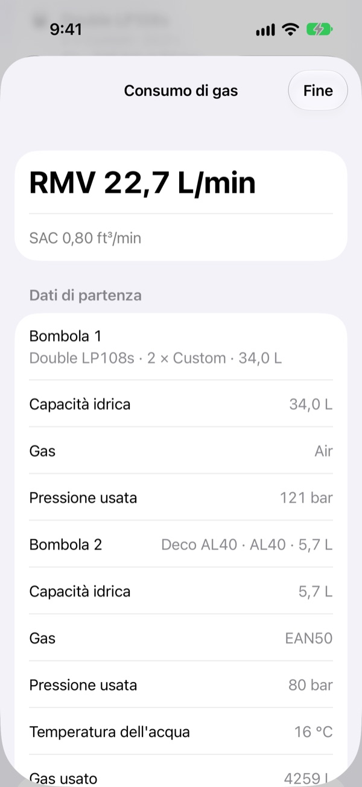

Prima di tutto, aggiorna ogni dispositivo
Molti problemi spariscono quando ogni dispositivo usa l'ultima build. Apri TestFlight su ogni iPhone, iPad e Mac che usi e installa gli aggiornamenti. Una build più vecchia smette di inviare le modifiche finché non viene aggiornata, e mostra Aggiorna Thermocline per continuare a sincronizzare. Le tue modifiche vengono conservate e inviate dopo l'aggiornamento.
Scaricamenti da un computer subacqueo
Il computer non viene trovato
- Riattiva il computer e mettilo in modalità Bluetooth (Shearwater: Menu → Bluetooth). Ci resta solo circa due minuti.
- Tienilo vicino all'iPhone, all'iPad o al Mac.
- I computer Shearwater tornano all'ultimo dispositivo che hanno usato. Se il tuo telefono o un altro Mac è nelle vicinanze, disattiva il Bluetooth su quel dispositivo, poi riprova.
- Controlla che il Bluetooth sia attivo e che Thermocline abbia il permesso di usarlo (iPhone: Impostazioni → Thermocline; Mac: Impostazioni di Sistema → Privacy e sicurezza → Bluetooth).
È un Predator o un Petrel 1 e l'iPhone non lo vede
Usano un Bluetooth più vecchio (Bluetooth Classic) che iPhone e iPad non possono usare. Scaricali sul Mac (vedi la guida), oppure importa le loro immersioni da Shearwater Cloud o da un file UDDF.
Si collega ma chiede un PIN
Inserisci il codice mostrato sullo schermo del computer. Serve solo la prima volta.
“Nessuna nuova immersione”
Vengono scaricate solo le immersioni successive all'ultimo scaricamento. Se hai eliminato un'immersione e la rivuoi, attiva Scarica tutte le immersioni del computer e scarica di nuovo. Le immersioni già nel tuo logbook vengono saltate.
Lo scaricamento si è interrotto a metà
Scegli Tieni per salvare le immersioni arrivate, poi scarica di nuovo per il resto. Se continua a interrompersi, scegli Riprova vicino al computer e invia il registro dello scaricamento.
Uno scaricamento via cavo non riesce sul Mac
- Controlla che la porta corrisponda al cavo: l'elenco indica il tipo di ogni porta e avvisa quando non è adatta al modello scelto.
- Scollega e ricollega il cavo, poi usa il pulsante di aggiornamento per cercare di nuovo i cavi.
- Segui i passaggi di Prima di iniziare per il tuo modello.
- Gli scaricamenti via cavo sono nuovi. Invia il registro dello scaricamento in ogni caso.
Sincronizzazione tra dispositivi
La mia app per iPhone dice che Thermocline ora è un'unica app, oppure vedo due app Thermocline
Il 18 novembre 2026 le app per iPhone, iPad, Mac e Apple Watch sono diventate un'unica app, con un unico link beta. L'app per iPhone che avevi prima ora serve solo ad aiutarti a passare a quella nuova.
- Apri la vecchia app. Se dice che la sincronizzazione è disattivata, tocca Attiva «Sincronizza con iCloud» e lasciala aperta per un minuto, oppure tocca Esporta il mio logbook in UDDF e salva il file.
- Tocca Unisciti alla nuova beta, oppure apri il link beta sul tuo iPhone, e installa la nuova app. Si affianca a quella vecchia.
- Nella nuova app, attiva Profilo → Sincronizza con iCloud. Le tue immersioni, i siti, l'attrezzatura e le impostazioni ritornano. Se invece hai esportato, usa Profilo → Importa un file di logbook.
- Potrebbe essere necessario abbinare di nuovo il tuo computer subacqueo e reinstallare l'app per Watch dall'app Watch sul tuo iPhone.
- Quando la nuova app mostra le stesse immersioni, elimina quella vecchia.
Su un Mac non cambia niente: continua ad aggiornare l'app per Mac come al solito.
Dopo una sincronizzazione mancano delle immersioni o sono doppie
- Per ora non cambiare nulla. Fai uno screenshot della sezione Sincronizzazione (iPhone: Profilo → Sincronizzazione; Mac: Thermocline → Impostazioni → Sincronizzazione) su ogni dispositivo e invialo.
- Controlla che ogni dispositivo sia sull'ultima build.
- Profilo → I tuoi dati → Punti di ripristino può riportare il tuo logbook a prima di un'importazione, di una fusione o di un'eliminazione. Il ripristino salva prima il tuo logbook attuale, quindi si può annullare.
Una modifica su un dispositivo non compare sull'altro
- Controlla che Sincronizza con iCloud sia attivo su entrambi, con l'accesso allo stesso Apple Account.
- Guarda In attesa di invio sul dispositivo dove hai fatto la modifica, e apri l'app su entrambi con segnale. La sezione Sincronizzazione indica quando questo dispositivo e gli altri corrispondono.
- Premi Sincronizza ora.
“Accesso a iCloud non effettuato”
Accedi a iCloud nelle Impostazioni del dispositivo. Fino ad allora il tuo logbook resta su quel dispositivo, al sicuro, e si sincronizza una volta effettuato l'accesso.
“Lo spazio di iCloud è pieno”
Il tuo logbook è al sicuro sul dispositivo e si sincronizza quando c'è spazio. Libera un po' di spazio su iCloud, oppure attiva Risparmia spazio iCloud sulle foto delle immersioni così le foto non vengono conservate due volte.
“Un altro dispositivo usa una versione più recente”
Aggiorna Thermocline su questo dispositivo in TestFlight. Le tue modifiche sono al sicuro qui e verranno inviate dopo l'aggiornamento.
Importazioni
Alcune immersioni o alcuni dettagli non sono arrivati
Il rapporto di importazione elenca tutto sotto Non importate e Da verificare, con il motivo. Ogni logbook scrive l'UDDF in modo un po' diverso, quindi i valori mancanti sono normali e restano vuoti. Se manca qualcosa che ti aspettavi, invia il rapporto e, se puoi, il file.
Mancano l'attrezzatura, le foto o i tipi di immersione di MacDive
L'export UDDF di MacDive li tralascia. Importa sopra il suo XML per attrezzatura, tag e tipi di immersione, e sul Mac importa la cartella di MacDive per le foto. Le immersioni già nel tuo logbook non vengono aggiunte due volte. Vedi Quale file di MacDive usare.
Mancano NDL, ppO₂ o CNS nelle immersioni da MacDive
La pagina dell'immersione mostra la NDL come “—” e Deco come “Non registrato”, oppure la ppO₂ dice “Calcolato da gas e profondità”. L'export UDDF di MacDive non include NDL, ppO₂ né CNS del computer. La sua cartella non ha il profilo delle immersioni che MacDive ha scaricato su un iPhone o iPad, perché le conserva cifrate.
Importa anche l'XML di MacDive: completa ciò che manca senza aggiungere di nuovo le immersioni. Vedi Quale file di MacDive usare.
Passare da un file o da un'app all'altra farà perdere qualcosa?
- I tuoi file originali non vengono mai modificati. Conserva i tuoi export di MacDive, e tieni MacDive finché non hai confrontato qualche immersione.
- Una seconda importazione aggiunge, non sostituisce. Le immersioni già nel tuo logbook vengono riconosciute e ricevono solo ciò che manca, quindi puoi importare l'XML dopo l'UDDF, o la cartella dopo l'uno o l'altro.
- Puoi tornare indietro. Un punto di ripristino chiamato Prima di un'importazione viene salvato prima di ogni importazione di più di un'immersione (Profilo → I tuoi dati → Punti di ripristino su iPhone, Impostazioni → Punti di ripristino sul Mac). Sul Mac, anche Annulla importazione… nel rapporto la annulla.
- Lasciare Thermocline: il suo export UDDF è quello completo. Include NDL, ppO₂ e CNS del computer lungo ogni immersione, attrezzatura, tag, tipi di immersione e link video. Le foto non sono incluse in nessun file di esportazione.
Le immersioni importate non hanno gas
Il file non indicava quale gas è stato usato. Quelle immersioni aspettano in Da confermare così puoi impostarlo.
Ho importato il file sbagliato
Sul Mac, usa Annulla importazione… nel rapporto di importazione. Su entrambi i dispositivi, un punto di ripristino chiamato Prima di un'importazione viene salvato prima di ogni importazione di più di un'immersione.
Un file Garmin non si importa
- “È un file zip”: Esporta originale di Garmin Connect dà un .zip. Decomprimilo, poi scegli il file .fit al suo interno.
- “Questo non è un file FIT Garmin”: il file non viene da un orologio Garmin, oppure solo il suo nome finisce con .fit. Usa il file della cartella GARMIN → Activity dell'orologio, oppure Esporta originale.
- “File Garmin non contengono immersioni”: corse, camminate, impostazioni e file sulla salute vengono saltati. Arrivano solo le immersioni.
- “Sembrano troncati o danneggiati”: il file si è interrotto a metà, spesso per una copia o uno scaricamento non terminato. Viene mostrato ciò che è stato possibile leggere; copia di nuovo il file dall'orologio e reimportalo per avere il resto. Le immersioni già nel tuo logbook vengono saltate.
- Scegliere un file Garmin insieme a un altro file di logbook non è possibile in una volta sola: importa il file di logbook, poi i file Garmin.
Un'immersione Garmin mi chiede di controllare le bombole
Con più di un trasmettitore, il file di Garmin non dice su quale gas era ciascuno, quindi sono stati abbinati alle bombole dell'immersione in ordine. Apri la sezione gas dell'immersione e assicurati che ogni pressione sia sulla bombola giusta.
L'orario di un'immersione Garmin è sbagliato di un'ora
L'orario viene dall'orologio. Se non era impostato sull'ora locale del posto in cui ti sei immerso, l'immersione compare all'ora dell'orologio. Modifica l'orario dell'immersione, oppure imposta il fuso orario dell'orologio prima del prossimo viaggio.
Un'immersione in corrente ha il sito sbagliato
Un'immersione viene abbinata al più vicino tra il punto in cui sei entrato in acqua e quello in cui sei riemerso, che in corrente di solito è il punto di entrata. Se è stata abbinata al sito sbagliato o a nessuno, scegli il sito sull'immersione e aggiungi nelle note gli altri relitti che hai incontrato.
Consumo di gas e SAC
Un valore di SAC sembra sbagliato
Tocca o fai clic su Come? accanto. Mostra ogni dato: la bombola e la sua capacità idrica, le pressioni, la temperatura, la correzione per gas reale, il tempo e la profondità. Il colpevole di solito è una capacità della bombola sbagliata; correggila in Attrezzatura. Invia uno screenshot della schermata Come? se sembra ancora strano.

Non c'è il SAC, solo un messaggio
- Aggiungi la capacità della bombola per vedere il SAC: scegli il modello della bombola o inserisci la sua capacità.
- Aggiungi la pressione iniziale e finale per vedere il SAC: non c'è un trasmettitore, quindi inseriscile sulla bombola.
- Il SAC richiede un profilo di profondità: le immersioni registrate a mano senza profilo non hanno SAC.
- Le immersioni con rebreather non hanno un valore di SAC.
Il SAC conta solo una bombola
In un'immersione con più gas, solo la bombola con il trasmettitore ha le pressioni. Inserisci la pressione iniziale e finale sull'altra bombola e il SAC copre tutto il gas.
Consumo di gas nel Riepilogo dice che nessuna immersione ha una capacità della bombola
Consumo di gas fa la media solo delle immersioni con una capacità della bombola e pressioni iniziale e finale. Le immersioni dall'UDDF di MacDive non hanno la capacità della bombola, perché le sue capacità non sono capacità idriche; importare l'XML sopra le completa (vedi Quale file di MacDive usare). Altrimenti imposta la bombola sulle tue immersioni (scegli il suo modello, o una configurazione) e aggiungi le pressioni dove le hai. Sotto il valore, Consumo di gas dice quante immersioni non sono state conteggiate.

Foto
Una foto non compare sull'altro dispositivo
Con Risparmia spazio iCloud sulle foto delle immersioni attivo, una foto conserva la sua copia finché l'altro dispositivo non la trova in Foto di iCloud. Attiva l'opzione su entrambi i dispositivi, controlla che Foto di iCloud sia attivo su entrambi e lascia il tempo per il caricamento.
I video non sono stati aggiunti
I video della tua libreria si possono solo collegare, non copiare. Attiva Sincronizzazione → Risparmia spazio iCloud sulle foto delle immersioni e assicurati che il video sia in Foto di iCloud. Oppure incolla un link YouTube o Vimeo sotto le foto dell'immersione.
“Thermocline non può leggere le tue foto”
L'accesso a Foto è stato negato, quindi le foto vengono copiate invece che collegate. Per collegarle, consenti l'accesso in Impostazioni → Privacy e sicurezza → Foto → Thermocline.
Siti e Apple Watch
Il sito suggerito è sbagliato, oppure non ce n'è nessuno
Scegli un altro sito, cerca per nome negli elenchi integrati, oppure segna o inserisci tu la posizione. Cave e laghi nell'entroterra spesso mancano dagli elenchi pubblici, quindi da quel momento i tuoi siti vengono per primi nei suggerimenti.
Thermocline non è sul mio Apple Watch
L'app per Watch arriva con l'app per iPhone da TestFlight. Sul tuo iPhone, apri l'app Watch, trova Thermocline sotto App disponibili e tocca Installa. Richiede watchOS 11 o versioni successive. Se sei passato dalla vecchia app per iPhone, installala di nuovo: la vecchia app per Watch appartiene alla vecchia app per iPhone.
L'orologio dice “In attesa di un fix buono” e Segna punto resta grigio
Un punto viene salvato solo da un fix entro ±30 m e vecchio meno di 30 secondi, così una posizione sbagliata non arriva mai nel tuo logbook. Resta in superficie con l'orologio fuori dall'acqua e una vista libera del cielo, e aspetta un minuto. Ignoro una vecchia posizione in cache significa che sta aspettando una posizione recente. Il GPS non funziona sott'acqua: segna il punto prima di scendere o quando riemergi.
“L'accesso alla posizione è disattivato per Thermocline” sull'orologio
Sull'orologio, apri Impostazioni → Privacy e sicurezza → Localizzazione, attiva Localizzazione e consenti a Thermocline l'accesso mentre usi l'app.
Un punto segnato sul Watch non è comparso sull'iPhone
Sull'orologio, apri Punti segnati. In attesa di invio all'iPhone significa che l'iPhone non l'ha ancora ricevuto: tieni l'orologio vicino al tuo iPhone e apri Thermocline sull'iPhone. Inviato all'iPhone significa che è lì: guarda in Logbook → Da confermare. L'iPhone cerca il punto quando è online, quindi senza segnale resta in attesa con in attesa di segnale per la ricerca.
L'orologio non ha mostrato il nome di un sito dopo che ho segnato un punto
Il nome arriva dal tuo iPhone: quando è vicino e Thermocline può rispondere, l'orologio mostra sotto il punto il sito che suggerirebbe, uno dei tuoi o uno degli elenchi dei siti di immersione, con la sua distanza. Con l'iPhone fuori portata, l'orologio dà il nome dei tuoi siti dalla copia che l'iPhone gli ha lasciato, ma non quelli degli elenchi dei siti di immersione. Se non c'è nessun sito entro circa 1,5 km, il punto viene segnato senza nome. In ogni caso il sito lo scegli sull'iPhone, in Logbook → Da confermare.
Il nome che ho detto sull'orologio non è stato salvato
Il nome si salva quando la dettatura o la tastiera si chiude, o quando torni indietro. Apri Punti segnati, tocca il punto e controlla il suo nome; tocca Cambia il nome per riprovare. Se il punto era già stato inviato, il nome lo segue fino all'iPhone.
L'orologio registra le mie immersioni?
No. L'app Thermocline per Watch segna solo punti in superficie. Le tue immersioni arrivano dal tuo computer subacqueo. Per gli orologi Garmin Descent, importa i loro file .fit: vedi Garmin Descent nella guida.
Un punto è sparito dall'orologio
È normale. Un punto lascia l'orologio quando viene confermato o scartato sull'iPhone. Un punto confermato è un sito nel tuo logbook e si sincronizza con gli altri tuoi dispositivi.
Invia una segnalazione o un registro dello scaricamento
- Dall'app: fai uno screenshot, poi usa Condividi feedback versione beta in TestFlight. Arriva con la build e il dispositivo allegati.
- Registro dello scaricamento, iPhone: nella schermata di scaricamento, tocca Registro dello scaricamento, poi condividilo. Elenca solo i messaggi del Bluetooth e del computer, senza dati delle immersioni.
- Registro dello scaricamento, Mac: nella finestra di scaricamento, scegli Registro dello scaricamento…, poi Salva registro…, e allega il file.
- Email: brian@616labs.net, con il tuo dispositivo, il numero di build (mostrato in TestFlight) e cosa ti aspettavi che succedesse.